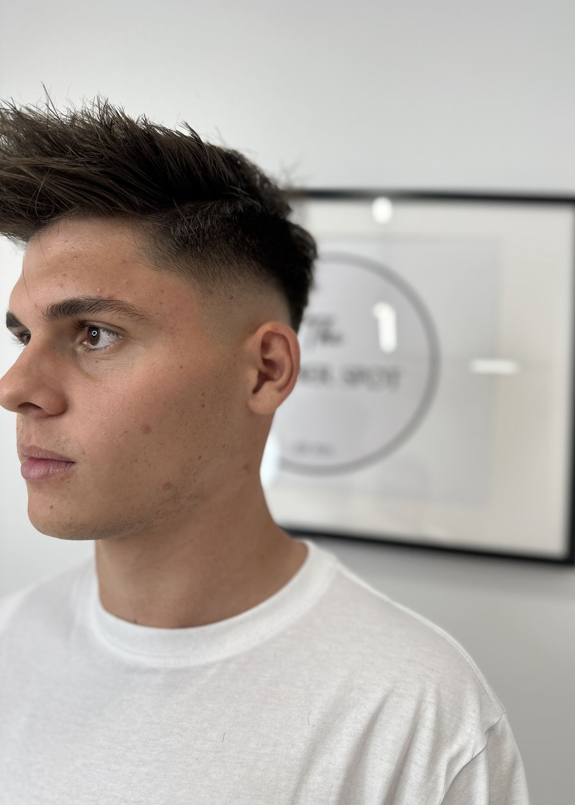
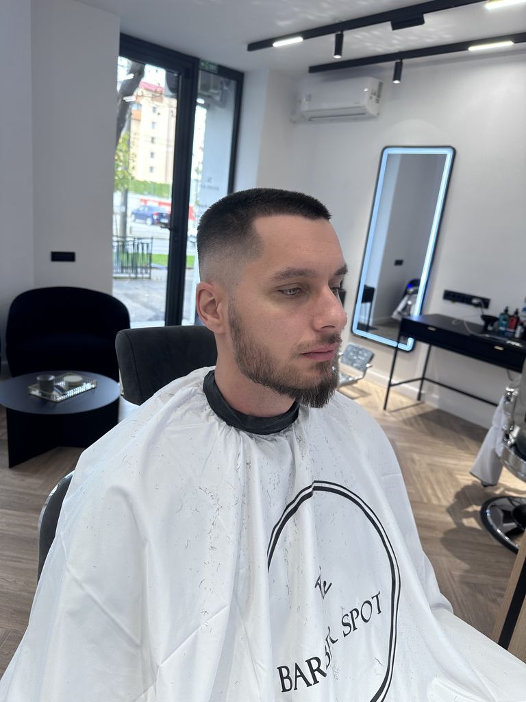
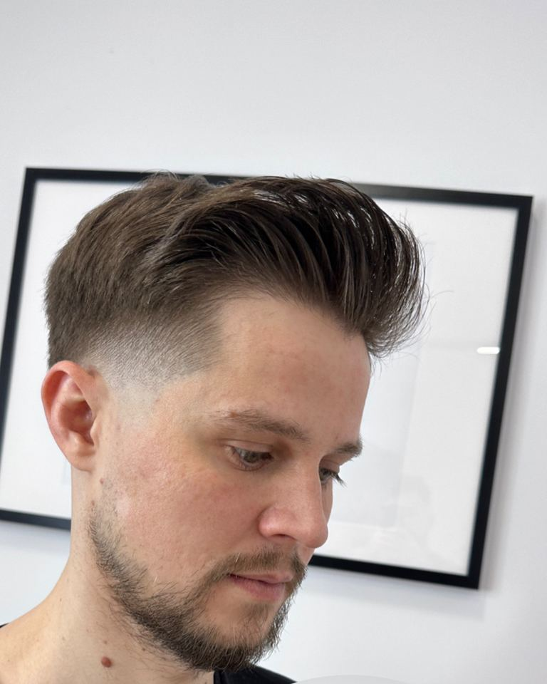
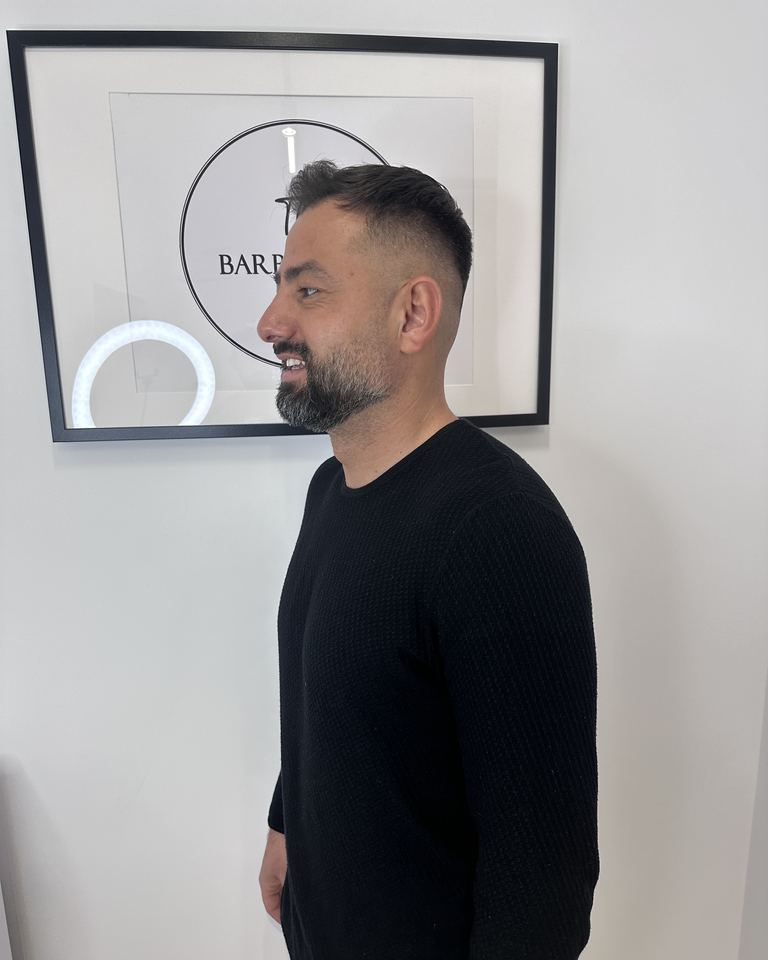
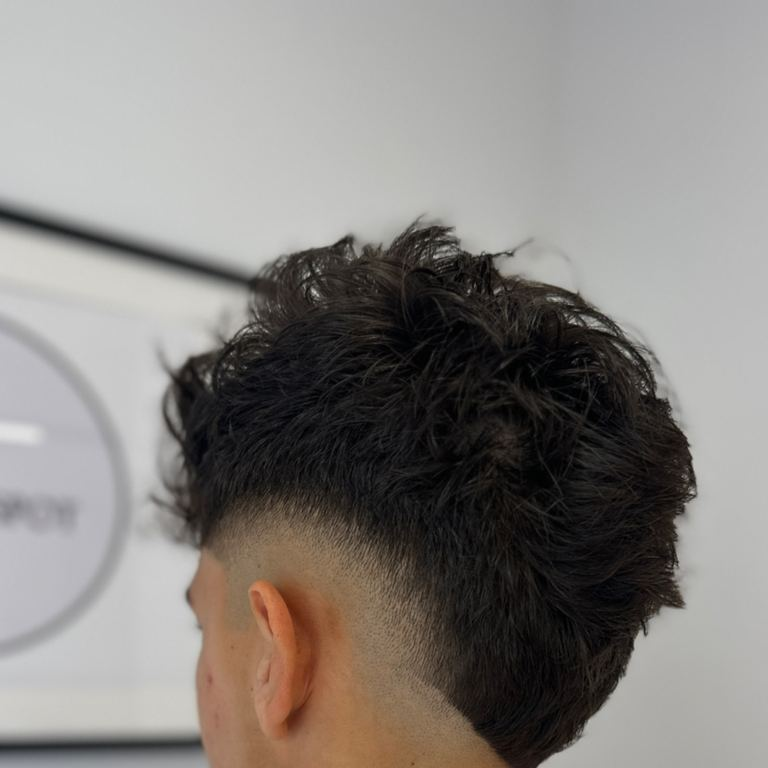

Tunsoarea care te reprezintă.
Barbershop pe Valea Oltului 12, Sector 6. Consiliere, tuns după forma feței, skin fade și barbă. Parcare vis-à-vis, la Penny.
Luni–sâmbătă 11:00–16:00 și 17:00–21:00, duminică închis

Din 2020, în Sectorul 6.
Îți oferim consiliere și tundem în funcție de fizionomia feței. Suntem atenți la toate detaliile și vrem ca tunsoarea ta să te reprezinte cât mai bine.
Din descrierea lor pe MERO.

Lucrări
Fotografii din galeria lor publică de pe MERO.



Alege-ți frizerul
Șase frizeri, aceleași prețuri. Fiecare are propriile recenzii pe MERO, iar linia de lumină arată cât de multe.
Aceleași prețuri la toți frizerii.
Prețurile sunt cele de pe pagina lor MERO. Duratele diferă puțin de la un frizer la altul.
În lei, conform MERO, 03.11.2026.
Programează-te pe MERO- Tuns clasic70lei
- Tuns clasic + barbă90lei
- Tuns skin fade90lei
- Tuns skin fade + barbă110lei
- Tuns + spălat80–100lei
- Tuns + barbă + spălat100–120lei
- Aranjat barbă40lei
- Spălat + styling30lei
- Tuns păr lung90lei
Mai sunt: epilat facial 20 lei (Laurențiu, Silview, Marian, Andrei) și pensat cu ceară 30 lei (Laurențiu, Marian).
12.167 recenzii pe MERO, media 4,99.
„Serios, sociabil, atent la detalii și mulțumit de rezultat. Recomand cu încredere!”
„Top ! Nota 10+ recomand cu încredere!”
„Super profi”
Recenzii preluate de pe pagina lor MERO, 03.11.2026.
Program și adresă
| Luni | 11:00–16:00, 17:00–21:00 |
|---|---|
| Marți | 11:00–16:00, 17:00–21:00 |
| Miercuri | 11:00–16:00, 17:00–21:00 |
| Joi | 11:00–16:00, 17:00–21:00 |
| Vineri | 11:00–16:00, 17:00–21:00 |
| Sâmbătă | 11:00–16:00, 17:00–21:00 |
| Duminică | Închis |
Program conform MERO, 03.11.2026.
Sector 6, București
Parcare vis-à-vis, la supermarketul Penny.
Scrie pe WhatsApp